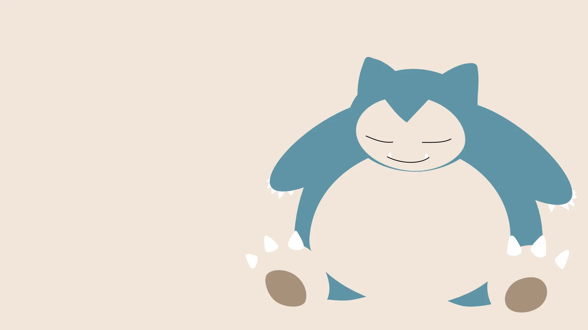
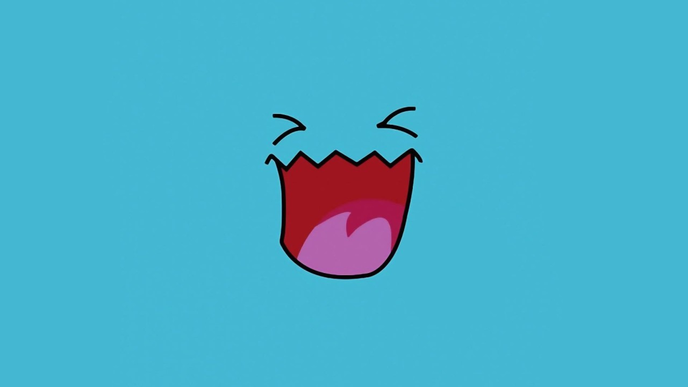

<div id="bestCarousel" class="carousel slide" data-bs-ride="carousel">

  <div class="carousel-indicators">
    <button type="button" data-bs-target="#bestCarousel" data-bs-slide-to="0" class="active" aria-current="true"
      aria-label="slide1"></button>
    <button type="button" data-bs-target="#bestCarousel" data-bs-slide-to="1" aria-label="slide2 "></button>
    <button type="button" data-bs-target="#bestCarousel" data-bs-slide-to="2" aria-label="slide3"></button>
  </div>

  <div class="carousel-inner">
    <div class="carousel-item active">
      
    </div>
    <div class="carousel-item">
      
    </div>
    <div class="carousel-item">
      
    </div>
  </div>

  <button class="carousel-control-prev" type="button" data-bs-target="#bestCarousel" data-bs-slide="prev">
    <span class="carousel-control-prev-icon" aria-hidden="true"></span>
    <span class="visually-hidden">Previous</span>
  </button>
  <button class="carousel-control-next" type="button" data-bs-target="#bestCarousel" data-bs-slide="next">
    <span class="carousel-control-next-icon" aria-hidden="true"></span>
    <span class="visually-hidden">Next</span>
  </button>
</div>